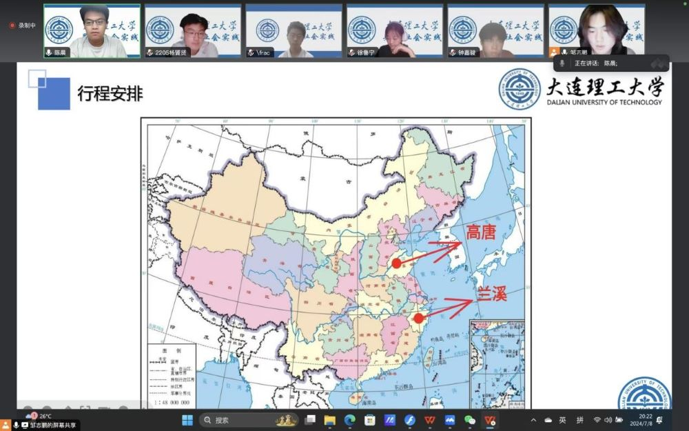
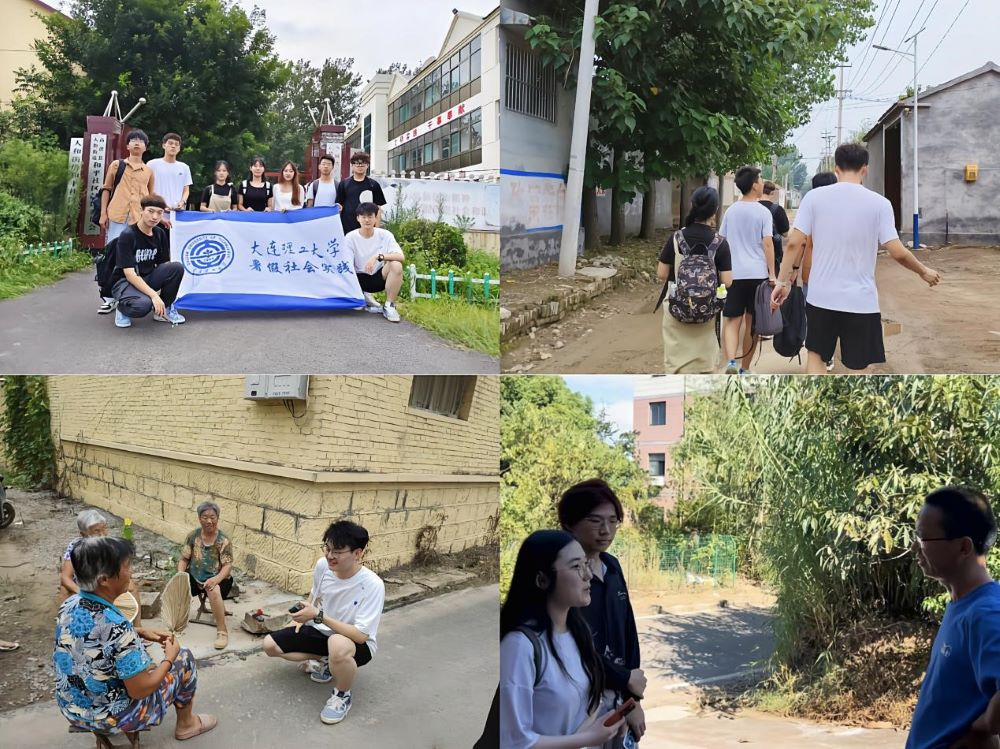
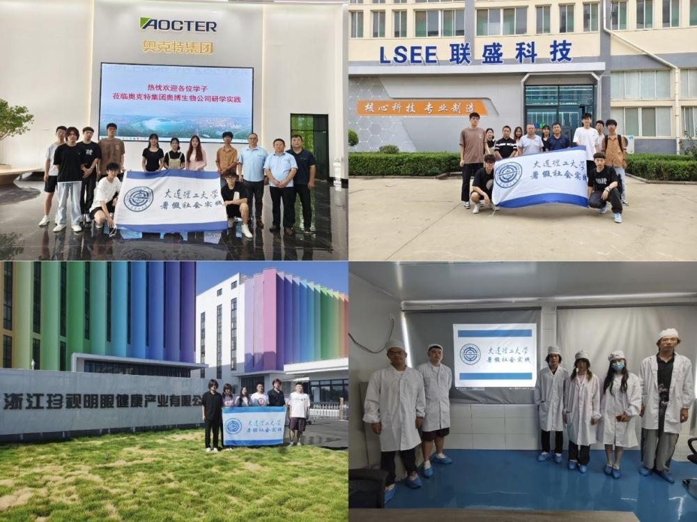
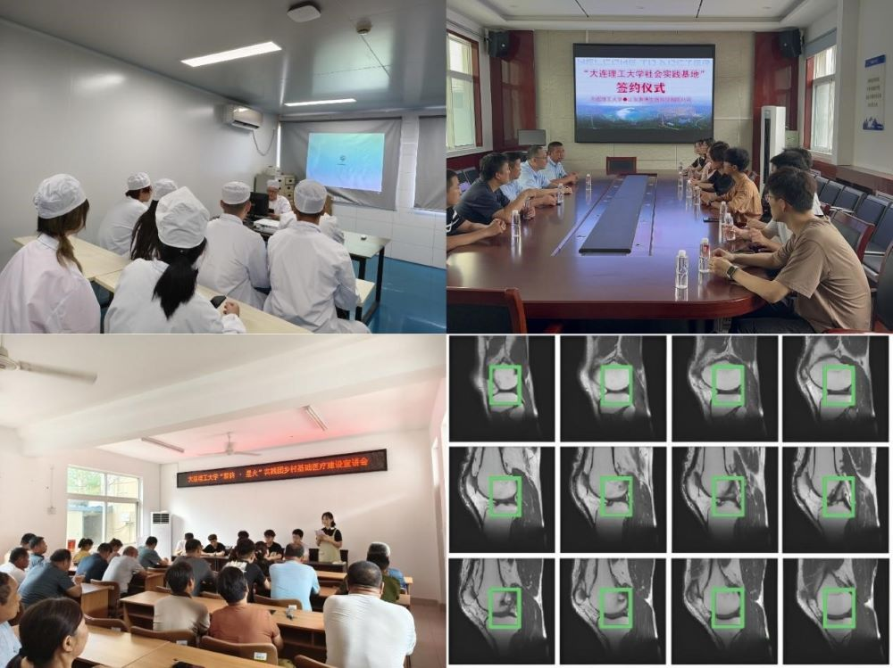

科技下乡的号角奏响崭新的征程，医疗建设的蓝图描绘金秋的气息。大连理工大学“紫韵·星火”实践团奔赴山东聊城、浙江金华两地，以昂扬的青春面貌感受时代变化。以向上的青春姿态发挥自身力量。
深入基层乡村，开展实地调研
“青衿之志，履践致远”。实践团以线上会议的形式对基础医疗建设政策进行了集体学习，组织团队成员阅读《医学简史》，浇筑了实地调研的坚实基础。
实践团开展线上会议纪实
为了更好的了解乡村医疗建设现状，实践团将实地调研与问卷调研相结合，于高唐县和平社区、兰溪市石埠村两地，对当地居民进行走访调研，面向全国发布问卷调查，收获了较多的数据支持。
实践团乡村调研纪实
走访地区产业，解码经济脉络
为探究地区发展状况，了解企业对经济的辐射带动作用，实践团形成两地-四企业格局，集体参观了公司展区、技术实验室与加工生产线等地，与集团负责人进行了深入交流，对科技赋能医疗下乡的可行性有了更进一步的认识。
实践团走访企业纪实
创新前沿科技，赋能医疗建设
为更好的解决医学影像的语义分割问题，帮助医师更加快速准确的识别病变部位，实践团研发了一款改进U-Net语义分割系统，解决了传统跳跃连接可能导致的信息损失问题，并通过企业鉴定与企业签订社会实践基地协议。
医疗辅助系统创新
“不忘初心，继绀前行”。实践团将继续深耕乡土，肩负时代使命，以实际行动和不懈追求，为乡村振兴贡献青年力量。